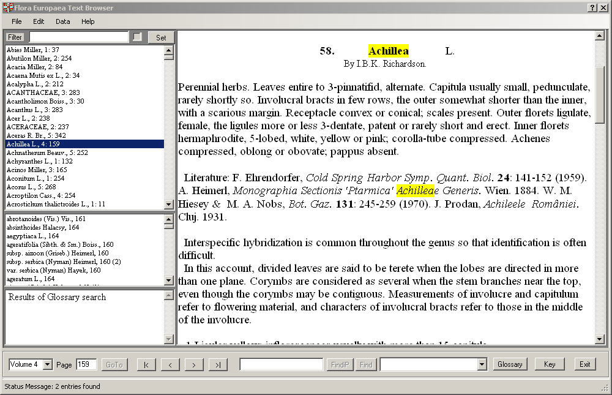

Main form of application.

The large textbox on the left side contains the current page. On the right side there is the index on level family and genus. If you select an entry in the family and genus index, the corresponding page of flora Europaea is shown in the main textbox. If your selected entry is a genus, all species belonging to that genus are shown below the index. If you click on a species the according text is shown in the textbox.
In the upper left part of the main window you can set a filter for the family and genus index. If the checkbox beside the filter text is on, the filter is active, otherwise it is inactive. To set a new filter, enter the filter text in the textbox and click the “Set” button.
Found text is marked with yellow background colour.
The command buttons at the bottom of the form allow us to navigate through the text of Flora Europaea: (from left to right)